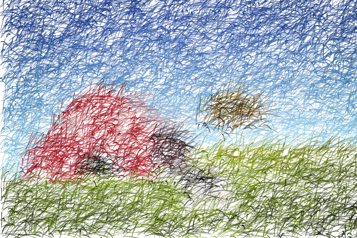

Impressionism
In this assignment, you will generate drawings in the style of impressionism through randomly placed smudges whose colors are determined by an image of your choosing.
Turning it: To turn in this project, you should place the website in a folder called impression inside of your class website and link the site from your main class homepage.
Requirements:
In this exercise, you will need to be able to place a "smudge" at a random location on the canvas. You might consider one of these options for your smudge:
- Convert the Random Mark example to a function mark(x,y) which places a random mark at (x,y).
- Convert the Brownian Motion example to a function brownian(x,y) which places a Brownian motion path at (x,y).
- Use the blotch function from your Implicit Curves Assignment.
The site should contain at least these pages:
- (1 page) A home page with a title and links to the pages listed below. Each page below will include either a Spork canvas or an image that you have generated. To generate each of these images, you can use either the animation loop or a for loop. If you use an animation loop, and if you include the spork canvas on your page instead of an image, be sure to include buttons to Stop, Go, and Start Over
- (1 page) Select an image as a base image. I suggest you use an image without a lot of detail and with contrasting colors. Generate a drawing composed of randomly placed "smudges" whose colors are determined by your base image.
- (1 page) Select another image as a base image. I suggest you use an image without a lot of detail and with contrasting colors. Generate a drawing composed of randomly placed "smudges" whose colors are determined by your base image.
- (1 page) Generate a drawing composed of randomly placed "smudges" whose colors are determined randomly. You may want to use an array to limit the possible colors.
If you would rather, this assignment can be accomplished through a photo-gallery of images you have generated.
Here are three example images:
